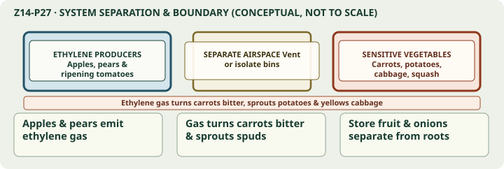

Z14-P27 · Food production and preservation · New manuscript
Isolate ethylene-producing fruits from sensitive stored vegetables
Prevent premature bitterness, yellowing, softening, and sprouting caused by invisible ethylene ripening gas inside enclosed storage spaces.
When it applies · Cellars, refrigerators, basements, and pantries storing both tree fruits and vegetables.
Equipment · Separate ventilated rooms, sealed bins, or physical distance between fruit crates and vegetable bins.

Actions
- Keep high ethylene-gas producers—especially apples, pears, and ripening tomatoes—physically separated from ethylene-sensitive vegetables such as carrots, potatoes, cabbage, squash, and leafy greens.[P05]
- Recognize exact ethylene damage symptoms: carrots stored near apples develop an intensely bitter taste (isocoumarin), potatoes sprout prematurely, cabbage leaves yellow and drop, and winter squash rinds soften and decay months early.[P05]
- Also isolate strong-odor produce (onions, garlic, cabbage) from apples, pears, and dairy/eggs so porous foods do not absorb harsh sulfurous flavors.[P05]
Failure recognition · Stacking crates of fresh orchard apples directly beside open baskets of carrots and potatoes inside a small unventilated cold room.[P05]
Verify · Confirm apples and pears are stored in separate sealed/vented spaces apart from carrots, potatoes, cabbage, and winter squash.[P05]
Stop or change course · Rapid unexplained carrot bitterness or early potato sprouting signals ethylene accumulation—separate fruit immediately and increase gentle airflow.[P05]
Evidence and editorial notes
- P05 · University of Minnesota Extension · Harvesting and Storing Home Garden Vegetables (current web edition)
- Section: Root-Cellar and Cold-Storage Temperature/Humidity Zones · Conditions: Basements, root cellars, unheated porches, and insulated cold bins
Support: Match stored produce to distinct storage regimes: cold-moist (32–40°F, high humidity for carrots/beets/cabbage), cool-moist (45–50°F for potatoes), cold-dry (32–35°F dry for onions/garlic), and cool-dry (50–55°F dry for winter squash); separate ethylene-producing apples from sensitive vegetables.
Limitations: Storing potatoes below 40°F converts starch to sugar; freezing temperatures ruin unhardened stored roots. · Conflicting evidence: None; prevents treating one basement temperature as universal for all crops.
Editorial note: Core root-cellar zoning and monitoring evidence in Z14. · Specialist reviewer: Post-harvest horticulture and food storage
Primary source · checked 2026-11-24
Source lineage · UMN Extension Harvesting and Storing Vegetables; new manuscript · Classification · New manuscript.